I COMPLETED THIS BRIEF AS ONE OF THE ENTRIES FOR THE RSA STUDENT DESIGN AWARDS 2018. FOR THIS BRIEF I WAS REQUIRED TO TACKLE A MODERN ISSUE WHICH IS MORE GENERATIONS LIVING UNDER ONE ROOF. I WAS TO DESIGN AND PROTOTYPE A MODEL OF MY CONCEPT, WHICH I DID USING ACRYLIC PLASTIC CUT ON A LASER CUTTER.
Democratic trends and property prices being on the rise means that more and more families are encouraged to live together, and increasingly multiple generations in the same house. The kitchen is a social space where the family share moments and emotional experiences. With modern technologies brings the opportunity for creative design to re-imagine how we use the kitchen as a family.
With DS Kitchens you are able to re-arrange, rotate, re-order and simply transform your kitchen whenever you want. With three units magnetically snapping together you are able to make a standard height counter top of 90cm tall. From young to old, whether able bodied or disabled, there are many different layouts you can experiment with to make your kitchen ideal for any size family.
The kitchen can pack down to be quite a space preserving unit so it can be really suitable for those with a smaller room as a kitchen. However those with larger kitchen space can explore the possibilities much further. Thanks to the magnets at each corner of every unit, not only does it snap together with ease, but you can stack them in a large number of variations.
These plans give a sense of just how easy assembly would be, the magnets create a truly effortless experience, and it looks sleek when it is all packed away and flush.
The fold out table packs away neatly inside its casing and when it is pulled out, a stability wall drops down to take the weight that the user puts on the table.
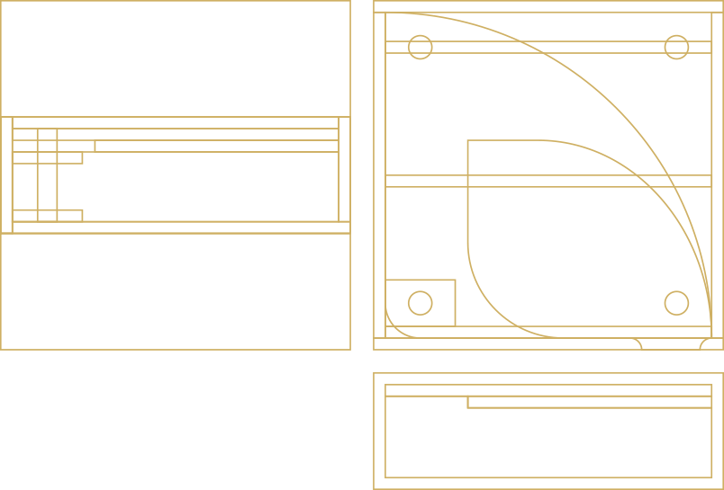With the help of soft push technology commonly found in our kitchens today, we are able to achieve a handle free design which once all put away sits flush and symmetrical.
The tunnel unit adding a whole new dimension to the kitchen serving as either a storage unit or a decorative unit providing more visibility around the kitchen.
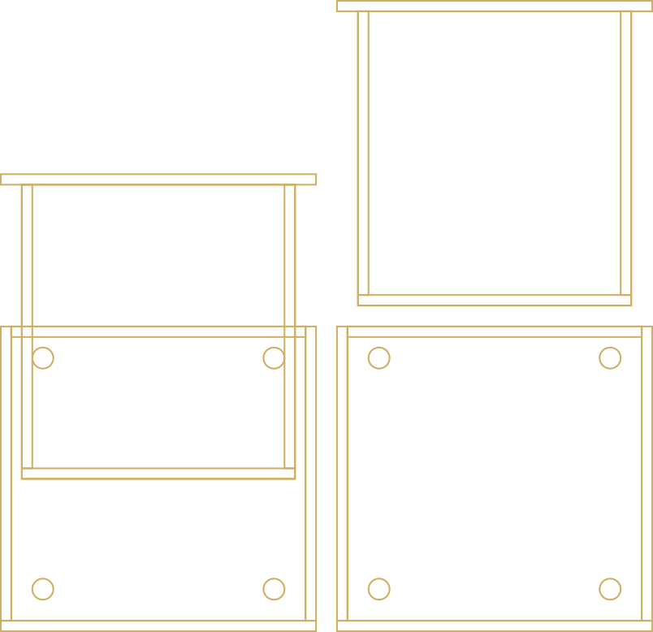I COMPLETED THIS BRIEF AS ONE OF THE ENTRIES FOR THE D&AD NEW BLOOD AWARDS 2018. I CHOSE THIS BRIEF BECAUSE THERE WAS A LOT OF SOCIAL MEDIA ACTIVATION INVOLVED AND FOCUS A LOT AROUND MODERN TECHNOLOGY AND HOW YOU WOULD USE THAT TO HELP A COMPANY EXPAND AND GROW REVENUE.
“Bacardi brings people together as their truest selves, letting them shed the pressures of society and act from instinct.”
Bacardi tie in most of their activation to music and events such as festivals during the summer where you have young adults being free having a good time. How could Bacardi become more of a year round drink?
The aim is to bring more attention to the brand in new and exciting campaigns whilst maintaining the Bacardi look and feel, that 150 years of heritage lives on.
How could one encourage people to start conversations with each other, in a world led by social media. How do you get people to be more physical, and in person, to go do activities away from your phone with real people.
With social media having taken over our social lives the best opportunities for good marketing are all online, that is where it will be seen that is where someone will engage with it.
Music is the number one shared experience, it is that one thing that everyone can enjoy together. A person’s music taste can say a lot about them, and when it comes to first impressions you would not want to give a wrong one. Through a simple hyper-link to Spotify we could have people connecting on whole new levels when coming to meet that special someone.
Today all you have to do is swipe right and you may have found the one, but this process can be long and daunting so how could we encourage sociability and get people to start conversations with each other? Through interaction. By putting a green button right onto someone’s profile, within seconds you could be listening to their favourite track, enjoy a piece of their personality, that is what Bacardi want to capture.
That is why the customisable portrait frames provide a great setting for the type of person you are connecting with. For example the way that you can choose the colour of your frame to be the same as the album cover of your favourite song, it shows you are passionate about what you believe in and shows dedication and determination, some good traits. The guy in the top-left seems like a man who enjoys a rather luxurious lifestyle with the way he used the Bacardi bat pattern as a background rather than a frame, and the guy in the bottom-right has some true dedication to Kanye West by having the same colour frame as the album cover.
Through web based application and a responsive portal you can log in and create your own Bacardi branded profile picture for Tinder which automatically links so you can be ahead of the game.
THE BOOK “INNOVATE CONSOLIDATE” IS FILLED WITH DIFFERENT METHODOLOGIES AND PROCESSES I WENT THROUGH TO ARRIVE WHERE I DID WITH EACH PROJECT, A CERTAIN GOAL BEHIND EVERY ASSIGNMENT WHICH TOOK ME AROUND BOURNEMOUTH AND POOLE IN AN ATTEMPT TO IMPROVE OUR COMMUNITY TODAY.
THE 150 PAGE BOOK IS FILLED WITH IMAGES, SKETCHES, QUOTES, THOUGHT AND EMOTIONS ALIKE.
The Community Camera was a social experiment aimed at bringing the community together without making them get together and attend a social event. The film camera cased inside a shell, so it cannot be removed, sits on a stand and people come up and pose behind the frame while a friend takes a photo, and that is all there is to it. The results and feedback we got from this experiment was beyond what we expected.
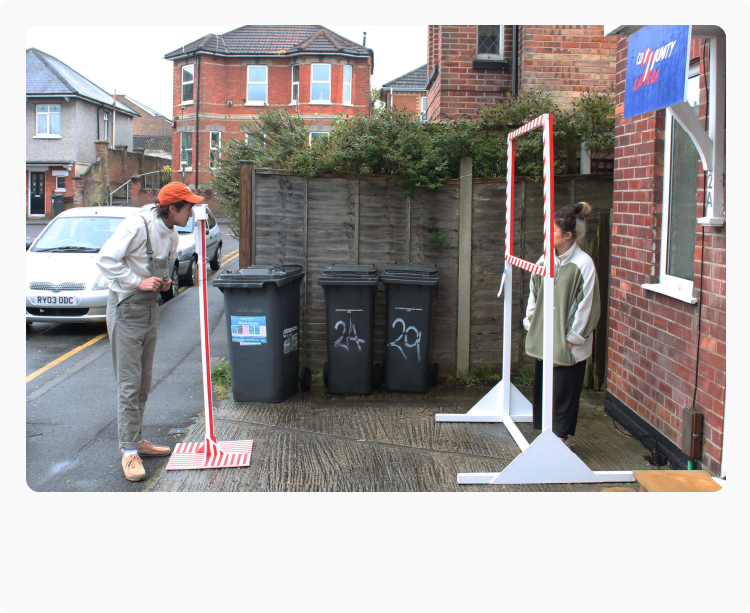 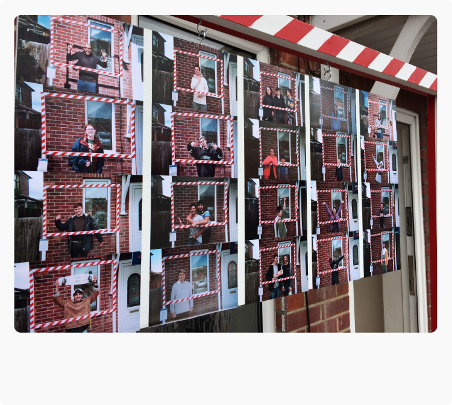The set up involved a camera stand with a camera secured in with screws, a frame for people to stand behind, a sign hanging to grab peoples’ attention, some clear instructions on how to use the camera as well as a log book so we can see how well people interact with it.
We had over two reels of film filled with peoples’ photographs from two different locations which we hung on a plaque and hanged it from the frame for the community to see. We had pictures ranging between all ages, children, young adults, families and elderly people, everyone in the neighbourhood was getting involved with the Community Camera.
Extracts from the book showcasing the making of the camera casing.
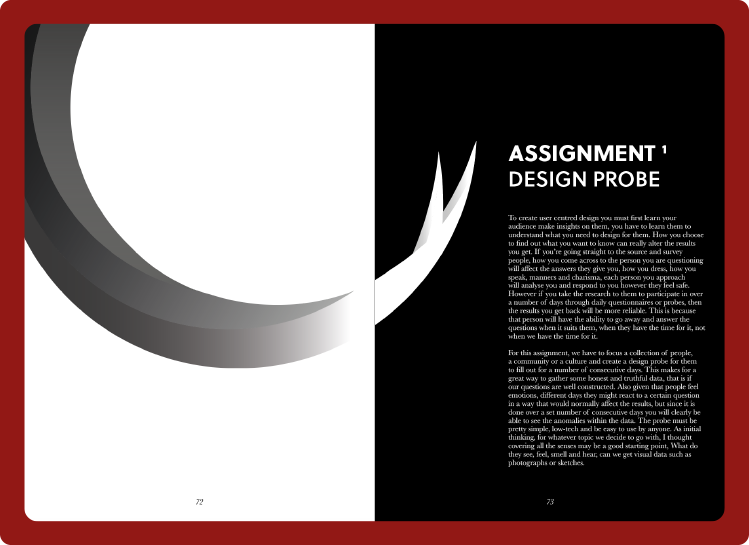 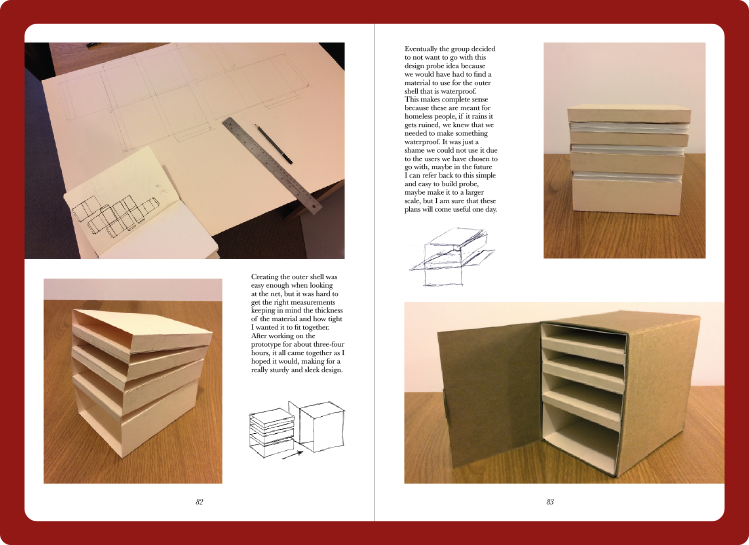Extracts from the book showcasing the making of the design probe.
For this assignment we created a design probe through which a user is able to log certain activities for us to gain insight and understanding into something over a period of time. It is a good method for gathering quantitative data.
“Clean up your community” was a social interaction which we set up, it is a set of three bins that has a message going across it which you could only read from one angle. This was set up in a way that anyone passing by would be in perspective at some point so they can read it. Anyone walking past it that noticed it would have been intrigued in what the message had to say, and hopefully they listened.
*Psst... There’s an important secret about this piece which I would like to share with you, check out the Photo Editing Collection in The Archives to find out more about what happened in the making of this project.*
We analysed Poole high street and its social situation. We found that a lot of the civilians there were elderly or disabled, and the shops and buildings were either broken down or abandoned completely, generally not creating a great atmosphere. We looked for the cause of this negative atmosphere and looked for a solution for this issue.
We found the courtyard was filled with large walls that had lamps coming out of them, people used this as an area to sit, however the level was too high creating a really uncomfortable experience for the user. So through conceptualisation and 3D modelling I transformed the courtyard into a social space where people can all sit down and relax.
THE BOOK “VISUAL SYSTEMS” IS FILLED WITH COLLABORATIVE WORK IN SMALL TEAMS OF PEOPLE UNDERGOING DIFFERENT TASKS EACH TIME IN VERY SHORT TIME FRAMES. THE BOOK IS MADE UP OF FIVE ASSIGNMENTS OVERALL SOME BROAD BRIEFS AIMED AT MAKING CHANGE AND SOME FOCUSED AUDIENCE BRIEFS.
THE 130 PAGE BOOK IS FILLED WITH FOCUSED DESIGN AS WELL AS A BROAD RESEARCH ON EACH PROJECT DONE BY MYSELF AND THE TEAMS I WORKED WITH.
The Mood Room is a conceptual space for students to go and study, or relax. For this room we developed a series of colours fading between each other, this was done in the order that resembles the mood of the campus throughout the day; Blue, Green, Yellow, Orange, Red, these findings were researched and recorded according to what students felt like from morning to evening.
This concept was set up on a projector aimed at a set of white chairs next to white walls. We chose everything to be white so it reflects the colours a lot better and soaks it up. It represents a space, a room where students can go at any time of the day and the colour tint in the room match the time of day, so it fits well with what mood you are most likely to be feeling.
The Godiva Gift Finder App is the outcome of a brief we did working in collaboration with Thinking Juice, a growing design agency based in Bournemouth. For this I made a functioning app mock up, so in the presentation I could walk through what the concept is clearly.
This was a client oriented brief so the entire time I was making sure that the design fits in with the current branding, Godiva is a well known chocolate brand, with a recognisable identity, which needs to be retained like any other live brand oriented brief.
Some interesting photography playing around with light and long exposures.
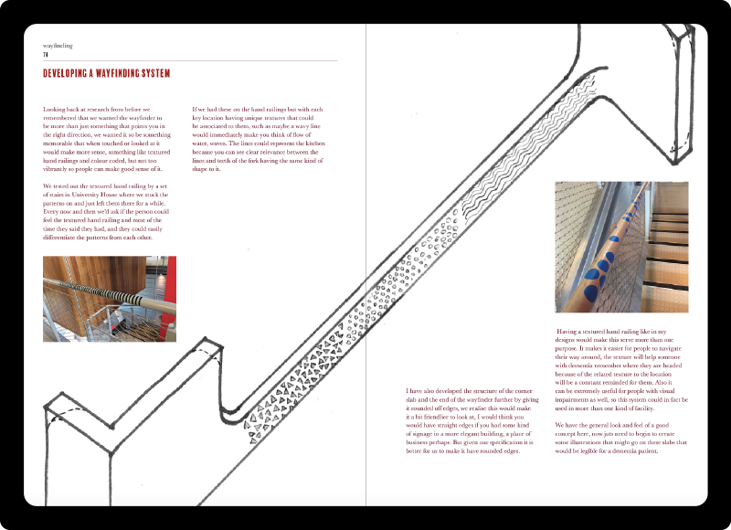 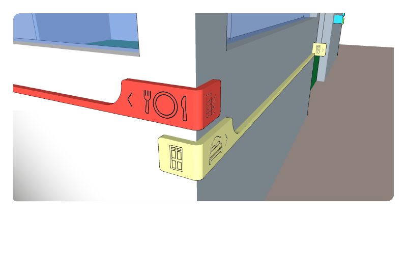 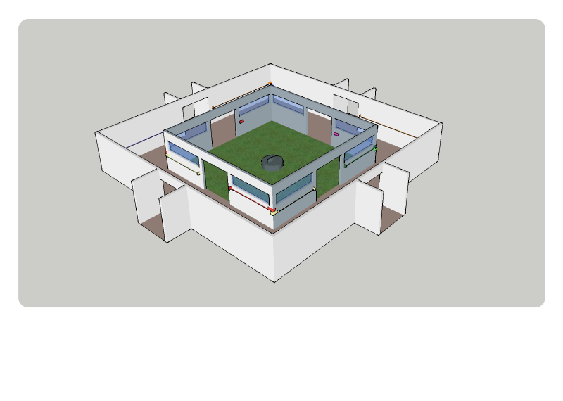The “Point The Way” system is a wayfinding system made for people with dementia. The aim of it is to help people with dementia in a care home gain some independence by implementing a railing which constantly reminds them which way they are headed, so simple tasks such as going to the kitchen for a snack or going to the toilet can be made really easy.
The railing system is colour coded as well as texturised to that it can be as distinguishable as possible for the user and helps point the way. Through sketch work, and physical modelling we conceptualised the system. Later taking to Google SketchUp I quickly visualised it in three dimensional digital space.
SOLO HIP/ HOP & R&B ARTIST WITH THE STAGE NAME “MAKCITY” APPROACHED ME ABOUT A LOGO FOR HIS STAGE IDENTITY. FROM THE BEGINNING HE WANTED HIS NAME TO BE THE LOGO SO HE WANTED SOME NICE TYPOGRAPHY.
OVER THE SPACE OF A FEW MONTHS WE EXCHANGED THOUGHTS AND FEEDBACK AND EVENTUALLY LANDED AT THE FINISHED PIECE WHICH HE HAS NOW TRADEMARKED.
First logo. Initially sketched, then digitalised on a Wacom Bamboo Pen & Touch 2012 model.
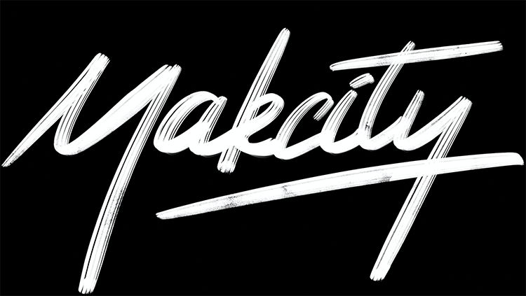First logo done on the iOS app, Procreate with the Apple Pencil on the iPad Pro.
Second logo, inspired by the iPad version, the distressed brush stroke gave me the idea of experimenting with even more distortion.
Finalised logo with the structure and guidelines of the letterforms shown.
THE PRODUCER AT MELLOW HEAD RECORDS ASKED ME ABOUT DESIGNING A LOGO FOR HIM, HIS ONLY SPECIFICATION WAS HE DID NOT WANT SOMETHING OBVIOUS, IF THE LOGO RELATED TO MUSIC IN SOME WAY, HE WOULD WANT IT TO BE SUBTLE.
USING FIBONACCI’S GOLDEN RATIO I WANTED TO DESIGN SOMETHING THAT THE CLIENT COULD REALLY ENJOY. THE COLOUR CHOICES COME FROM THE NAME “MELLOW”, IS SUCH A WARM AND RELAXING WORD AND I WANTED THE LOGO TO REPRESENT THAT.
Original sketches and ideation, thinking about mixing musical notes or symbols with animal forms.
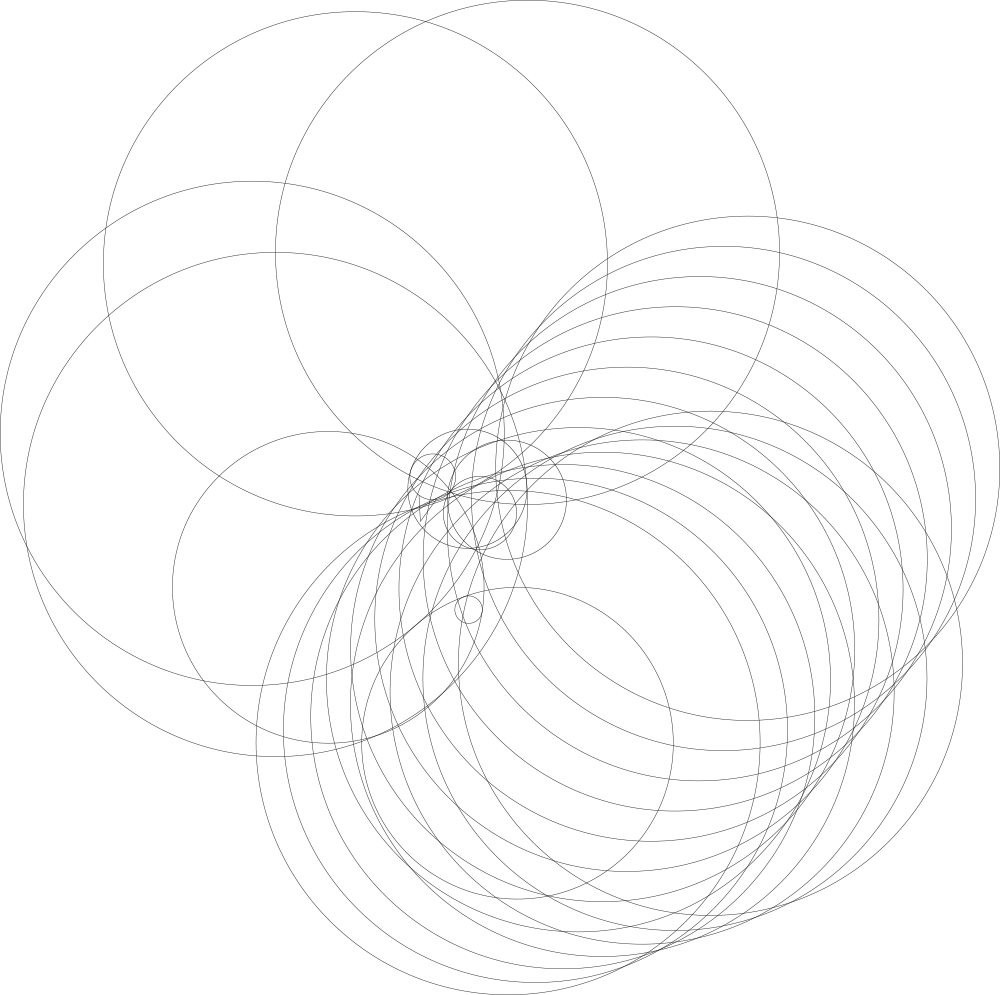Using Fibonacci’s Golden Ratio, I set out to build the bird. Keeping in mind the increase of size is 1.61 each time to maintain the correct proportions.
This is the final logo accepted by the producer at Mellow Head Records.
Another logo attempt of a flamingo resembling a treble clef, in the end did not resemble the treble clef all that much and looked more like a seahorse.
A SMALL START-UP BUSINESS SPECIALISING IN SEWING AND ALTERATION ASKED ME FOR A LOGO WHICH IS MODERN AND CLEAN DESIGN USINGLIGHT PASTEL COLOURS. THE CLIENT HAD RATHER SPECIFIC STYLE IN MIND WHICH MADE THE DEVELOPMENT STAGE VERY EASY.
Final logo chosen and used by the client.
The client mentioned about her star sign being Pisces which she said she might like as a logo, so I took the best elements of two designs and merged them into something interesting.
HERE IS A COLLECTION OF LOGO DESIGNS I HAVE DONE IN THE PAST. SOME WERE REAL BRIEFS FOR REAL CLIENTS, SOME WERE MADE UP BRIEFS. EACH TIME I AM EXPERIMENTING WITH A DIFFERENT ELEMENT OF DESIGN, BE IT NEGATIVE SPACE, FIBONACCI’S GOLDEN RATIO, LINE ART, POP ART, ABSTRACT ETC.
HERE IS A COLLECTION OF SIGNIFICANT PHOTO EDITS I HAVE DONE IN THE RECENT PAST, AND SOME THAT I DID MANY YEARS AGO. ONE OF THESE EDITS DATE BACK TO JULY 2013, AT THE TIME, I WAS FOURTEEN YEARS OLD, WHEN I BOUGHT MY FIRST GRAPHICS TABLET AND I STARTED GETTING INTO PHOTO MANIPULATION.
THIS LED ME TO GO ON TO STUDYING PHOTOGRAPHY IN COLLEGE AND LEARNING THE CAMERA, FROM LOADING THE FILM, TO PREPARING THE NEGATIVE IN THE DARK ROOM, TO EXPOSING THE NEGATIVE ONTO PHOTOGRAPHIC PAPER.
Everyone knows how important it is to layout your findings and insights, no matter how much you have done, unless you present it in a clear logical way, someone reading your work could get confused if the way that it is presented does not reflect clearly what your findings are.
Here I have my research boards for the D&AD New Blood Awards 2018 Bacardi brief. Over the space of two days I delved deep into researching the brand identity, the target audience and did a lot of idea generation before developing a finalised outcome. The photograph is very off colour due to the dull and low lighting in my room. Also a tutor would not be able to decipher this if I was to present it in a book. It must be shown in pieces.
I took that first photograph and chopped it up into sections. Through cutting out methods such as the “Quick Selection Tool”, “Color Range” and the “Eraser Tool”, I managed to get a pretty close look and feel of the paper being stuck right there on the screen. With the “Eraser Tool” on 30% I went over each masking tape. What this allowed me to do is have any colour background or texture and the research will still blend in to clean flat image, because the masking tape is translucent.
Through various adjustment layers such as “Levels”, “Curves”, “Hue/ Saturation” etc, I corrected the colouring as much as the photograph allowed, where the paper is still yellow and colours are very off, it is nevertheless much easier on the eyes it not being so yellow. Also the bronze background colour works very nicely with the tone of the images.
There are other examples of me implementing this method to presenting research, I feel it is a very clear and understandable way to lay out findings.
The secret about this project is it took all day to do, to get the perspective right, the letters to all be the same size it was tedious and the shapes we were working with made it very hard to do it right. As a matter of fact it took so long that we lost the daylight and we ran out of tape at the end. This left the project incomplete. However that did not stop me from completing the piece using other means.
Can you guess which letters were not done by tape but rather photoshopped on? The “COM” in “COMMUNITY”. Keeping in mind perspective, the relation between floor and wall, texture and depth, I used my Adobe knowledge to complete this project.
Here is a close up on all the letters which I completely photoshopped in. Notice the tape stretching and bending around the wheel of the bin, or the fencing giving the tape depth and texture as it runs down the ridges.
I also made general touch ups on the photo to get rid of any major imperfections so when you look at the lettering it is as correct as it can be given the circumstances.
This is one of the first full photoshopped pieces I ever did. When I first started out with my Wacom graphics tablet, I really got into photo manipulation, where these photographs are not the highest resolution you can still see how I am piecing together this photograph.
Notice the front of the nearest ship is broken off and on fire, but you can also see the reflection in the water. Little details that bring the photograph together that much more, or in the background the church tower is mid impact with a meteor and the top of it is falling down. Was really nostalgic stumbling across this piece.